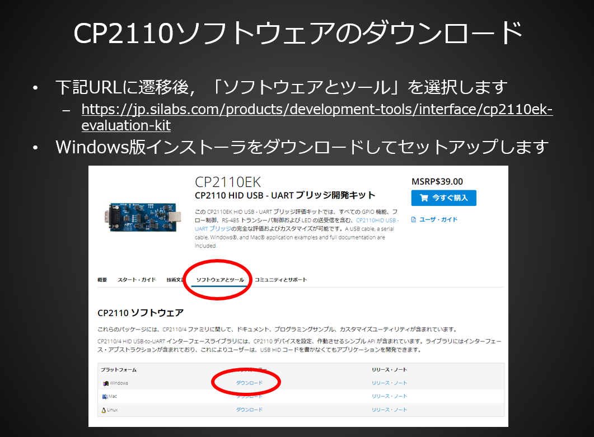

スマートものづくり人材育成講座 実習補助ページ
ロボット実習で利用する教材をダウンロードの上，インストールとセットアップを行ってください．実習資料のダウンロードをお願いします
以降の項目についてダウンロードならびにセットアップをお願いします
- 1.WinPython 3.7ダウンロードとインストール
- ダウンロード後にインストーラを起動し，任意のディレクトリに解凍／インストールしてください（３０分から１時間程度かかります）
- 解凍／インストールしたディレクトリに当日アクセスしますので，忘れないよう願います
- 2.SCARA ProgrammerのダウンロードページからZip版のダウンロードと起動を事前に実施してください．
- ダウンロード後に必ずSCARA Programmerの起動を行ってください
- SCARA Programmerを起動した際，「d3dx9_43.dll/d3dx9_32.dllがない」と表示されてアプリケーションが起動しない場合，こちらからMicrosoft DirectXの該当プログラムのダウンロードとインストールを実施してください．
- 3.ロボットとPCを接続する際に必要な「CP2110/4 HID USB-to-UART インターフェースライブラリ」をダウンロードの上，インストールを済ませてください．
CP2110/4 HID USB-to-UART インターフェースライブラリ(Sillicon Lab社のページへ)

- 4.実習用ロボット・画像処理ソフトウェアアーカイブ
上記アーカイブについてダウンロードをお願いします．※セットアップ等については実習当日に行います
- 5.実習ロボット用ネットワーク制御用サーバ
上記アーカイブについてダウンロードをお願いします．※セットアップ等については実習当日に行います
- 6.実行サンプル
- 7.WinPythonへのOpenCV-pythonのインストール
（インターネットへのアクセスが必須の作業になりますので，事前に必ず実行願います）